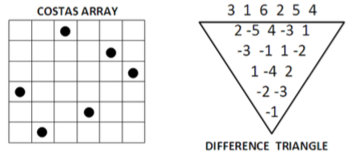

This work is licensed under a Creative Commons Attribution 4.0 International License.
This work is licensed under a Creative Commons Attribution 4.0 International License. Proposed by Serdar Kadıoğlu, Özgür Akgün
A costas array is a pattern of $n$ marks on an $n * n$ grid, one mark per row and one per column, in which the $n*(n - 1)/2$ vectors between the marks are all-different.
Such patterns are important as they provide a template for generating radar and sonar signals with ideal ambiguity functions.
A model for Costas Array Problem (CAP) is to define an array of variables $X_1,…,X_n$ which form a permutation. For each length $l \in \{1,…,n - 1\}$, we add $n-l$ more variables $X^l_1$ $1,…,X^l_{n-1}$, whereby each of these variables is assigned the difference of $X_i - X_{i+l}$ for $i \in \{1,…,n - l\}$. These additional variables form a difference triangle as shown in the figure below.
Each line of this difference triangle must not contain any value twice. That is, the CAP is simply a collection of all-different constraints on $X_1,…,X_n$ and $X^l_1 …,X^l{n-l}$ for all $l \in \{1,…,n - 1\}$.

Costas arrays can be constructed using the generation methods based on the theory of finite fields for infinitely many $n$. However, there is no construction method for all $n$ and it is, e.g., unknown whether there exists a Costas Array of order 32.
The problem description was taken from [kadioglu2009dialectic] with small adaptations.
For a related problem, please see Golomb rulers.
Here is a website which contains some more information on the problem: http://datagenetics.com/blog/february22013
There was a dedicated website for the Costas Arrays Problem at www.costasarrays.org, but it doesn’t seem accesible any more. It can be found on the Wayback Machine.
Helmut Simonis had slides on Costas Arrays here: https://web.archive.org/web/20161130192658/http://4c.ucc.ie/~hsimonis/ELearning/costas/slides.pdf
This work is licensed under a Creative Commons Attribution 4.0 International License.